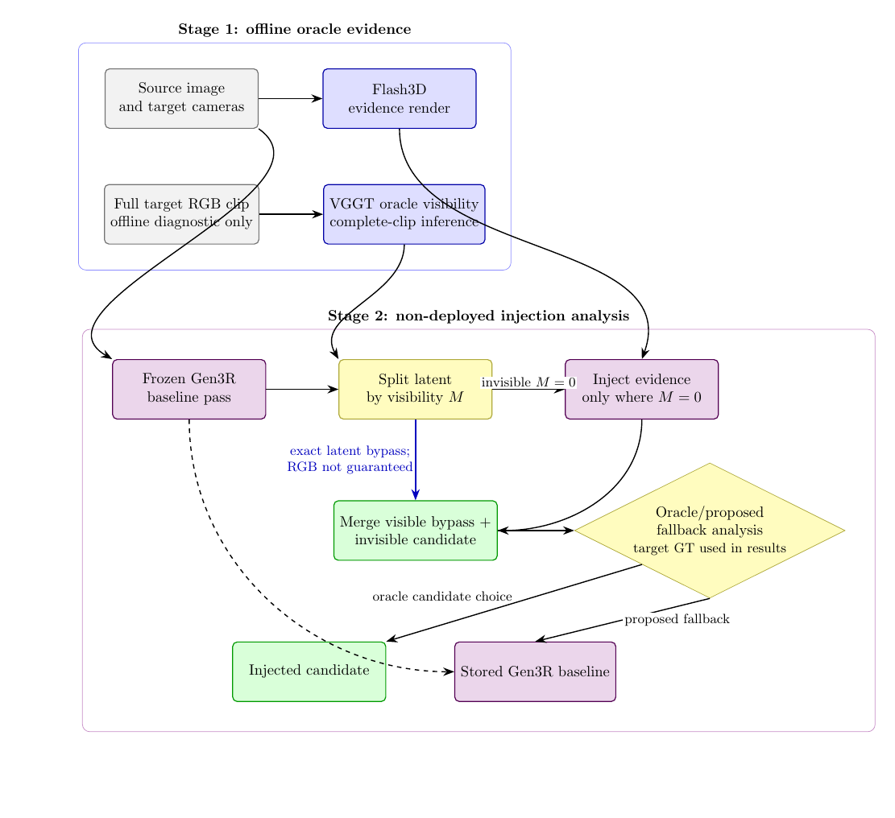
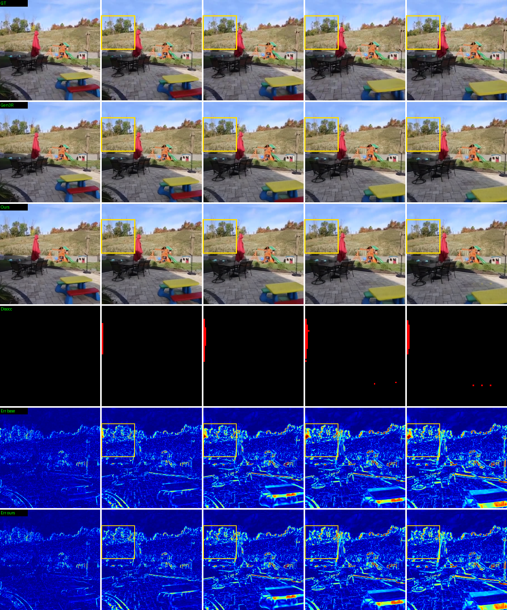
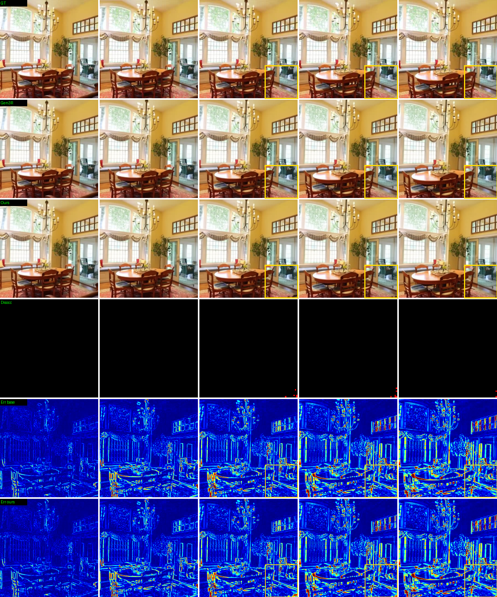
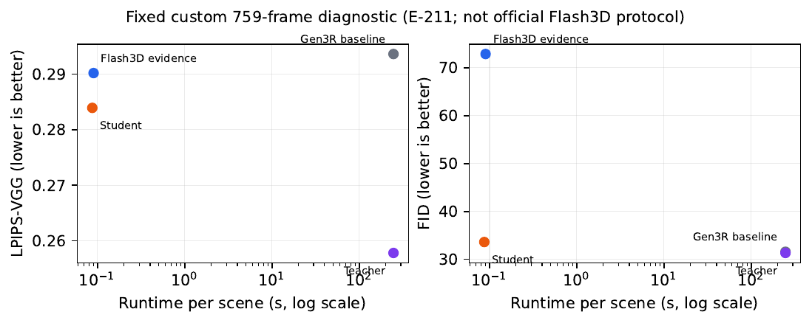

Evidence-first research document
生成先验引导的
单视图场景级三维重建
从单张 RGB 和相机信息生成可渲染场景表示，并把“生成先验何时有效、能否压缩、能否安全调用”拆成可独立核查的诊断、蒸馏和可靠性审计。
1. 研究总览
研究目标。 改善单视图重建在反遮挡区域的表现，同时避免把生成模型的合理幻觉包装成已恢复的真实几何。这里报告的是机制证据、压缩结果与失败边界，而不是一个已经解决安全选择问题的部署系统。
2. 数据与协议
主要数据是 RealEstate10K；ACID 仅有 8-scene / 215-frame 的已归档跨域机制诊断。官方 MINE、两视图 pixelSplat 协议、长序列 oracle 诊断和 ACID 转换轨迹严格分开。
场景与帧 population 由 166-scene manifest 和 2,898-frame manifest 固定。数据获取和外部存储规则见 data/README.md。
3. 研究路径
选择性注入
诊断几何 evidence 在哪些困难场景改善生成结果，并保留 easy 场景被破坏的反例。
先验蒸馏
在模型卡声明的 oracle-curated 条件下，把慢速 teacher 的图像残差行为压缩到 46,371 参数 TinyStudent。
可靠性审计
区分 GT-derived diagnostic 与真正可观测相机特征，检查 selector 是否保留严重失败。

4. 验证方式
- release smoke 校验 13 份 headline JSON、两个 manifest、README 链接、CFF 和 TinyStudent SHA256/前向。
- Paper 1 测试上游根目录错误处理；Paper 2 测试 checkpoint 与 claim integrity；Paper 3 测试 grouped folds 和证据边界。
- workspace 测试检查五项目录、实验记录、页面链接和关键证据文件。
cd 3d-reconstruction/data/results/github_release
python3 scripts/smoke_test.py
python3 scripts/test_workspace_layout.py完整复现说明：REPRODUCIBILITY.md。
5. 当前有证据支持的结果
选择性与难度依赖
| 分组 | n | 平均变化 |
|---|---|---|
| Hard | 66 | +2.486 dB |
| Mid | 81 | +0.108 dB |
| Easy | 19 | -2.517 dB |
组件质量差与收益相关性 r=0.9817，但该信号依赖 GT probe。阅读 E-203 完整记录。


固定全图诊断
| 方法 | PSNR ↑ | LPIPS-VGG ↓ | FID ↓ |
|---|---|---|---|
| Gen3R | 17.768 | 0.360 | 31.774 |
| Injected | 19.224 | 0.341 | 31.143 |
| Flash3D evidence | 19.761 | 0.444 | 54.841 |
这是 21 scenes / 759 frames 的自定义诊断，不是官方 MINE 排名。阅读 E-210 完整记录。
蒸馏、可靠性与跨域边界

逐实验记录
以下六个入口统一通过本地 reader 打开；原始 Markdown 保持不变。
6. 已知失败与不可主张内容
- Easy scenes 的 always-inject 平均为负；ACID 8-scene 平均也为负。
- GT-derived AUC 0.947 不能当作可部署 selector；camera-only 仍保留 -23.094 dB 最坏损失。
- TinyStudent 精确重训缺少 holdout 和 frame-label manifest。
- Paper A 草稿报告的结果缺少本地 registry/JSON，已排除，不进入主表。
- CycleFusion 只有设计和汇总日志，原始结果和五列定性素材待恢复。
7. 下一步
- 恢复 CycleFusion E838/E841/E856/E861/E863 原始 JSON、配置、代码 commit 和真实面板。
- 为 Paper A 恢复 experiment registry 和 held-out 原始结果。
- 补齐上游模型 commit/checkpoint hash、随机种子和数据校验值。
- 用真正单图可观测证据重新研究安全 selector。
- 新实验统一写入独立记录，不再只保存在长日志或服务器目录。